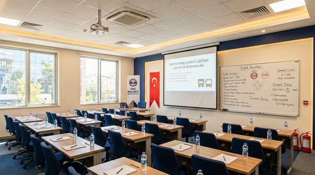

Temel Fark: Yurt İçi mi, Uluslararası mı?
SRC 3 ve SRC 4 arasındaki en temel fark taşımacılık alanıdır. SRC 4 yalnızca yurt içi yük taşımacılığını kapsarken SRC 3 hem yurt içi hem uluslararası taşımacılığa izin verir. Dahası, SRC 3 alan bir sürücü SRC 4'ü de kapsamış sayılır; ayrıca SRC 4 almanıza gerek kalmaz.
SRC 3 ile SRC 4 Karşılaştırması
| özellik | SRC 3 | SRC 4 |
|---|---|---|
| Yurt içi yük taşıma | ✅ Evet | ✅ Evet |
| Uluslararası yük taşıma | ✅ Evet | ❌ Hayır |
| Eğitim süresi | 41 saat | 36 saat |
| SRC 4'ü kapsar mı? | ✅ Evet, otomatik | — |
| Ehliyet şartı | C, CE | B veya C |
| Sürücü belgesiz cezası | 4.827 TL | 4.827 TL |
| Firma belgesiz cezası | 12.178 TL | 12.178 TL |

SRC 4 Yeterliyse Kimler Alabilir?
- Yalnızca Türkiye sınırları içinde yük taşıyacak olanlar
- Kargo ve nakliye şirketlerinde yurt içi hat çalışanlar
- Kamyonet, pikap ve panelvan ile yurt içi teslimat yapanlar
- Uluslararası taşımacılık planlamayan kamyon ve çekici sürücüleri
SRC 3 Daha Mantıklı Olan Durumlar
- Hem yurt içi hem yurt dışı hat çalışacaksanız: SRC 3 alın, SRC 4'ü de kapsar
- İleride uluslararası geçiş yapma ihtimaliniz varsa: şimdiden SRC 3 alın, 13 saat fazlası uzun vadede kazandırır
- TIR veya çekici kullananlar: zaten CE ehliyeti gerektiriyor, SRC 3 kapsamında çalışırsınız
- Lojistik sektöründe kariyer yapmak isteyenler: SRC 3 daha geniş kapı açar
Eğitim Süresindeki 13 Saatlik Fark Önemli mi?
SRC 3 eğitimi 41 saat, SRC 4 ise 36 saattir. 13 saatlik fark yaklaşık 2-3 ek ders günü anlamına gelir. Bu süre çok kısıt yaratmıyorsa uzun vadede seçenek genişliği açısından SRC 3 daha avantajlıdır. Kurs ücretleri arasındaki fark ise genellikle sınırlıdır.
Hem SRC 3 Hem SRC 4 Almak Gerekiyor mu?
Hayır. SRC 3 belgesini alan sürücü otomatik olarak SRC 4 kapsamına da girer. İki belge ayrı ayrı almanıza gerek yoktur. Bu nedenle uluslararası taşımacılık yapan ya da yapma ihtimali bulunan sürücülerin doğrudan SRC 3 alması zaman ve maliyet açısından daha akıllıca bir tercihtir.
Hala Emin Değilseniz
Araç türünüzü ve çalışma alanınızı söyleyin; hangi belgenin doğru olduğunu birlikte belirleyelim. Yanlış belge alıp ekstra kurs maliyetine girmemeniz için bizi aramadan karar vermeyin.